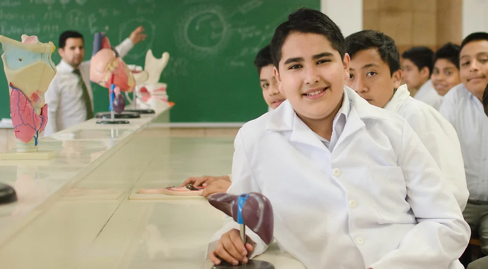
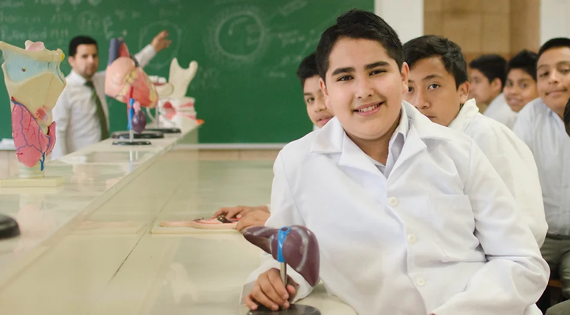

El trabajo bien hecho
Kinal es un Centro Educativo privado, no lucrativo, dirigido a la formación técnica profesional de jóvenes y adultos, de beneficio colectivo y asistencia social en favor de los sectores más necesitados de la comunidad. Nuestro valor fundamental es enseñar a realizar el trabajo bien hecho, que sea la base de la superación de alumnos y el medio para servir a los demás.
Jóvenes veneficiados
k
25K
k
1.5K
k
6K
k
31.5K

62 años de historia
Estamos celebrando 62 años de historia, 62 años de ayuda a la juventud y educación en Guatemala.Nuestro proyecto está dividido en cuatro Programas o Escuelas a las que se accede en función de la edad y el grado académico que posee. El valor fundamental es enseñar a realizar el trabajo bien hecho, que sea la base de la superación de los alumnos y el medio para servir a los demás. La formación doctrinal y espiritual está a cargo de la prelatura del Opus Dei, institución de la Iglesia Católica, que ayuda a encontrar a Cristo en el trabajo, la vida familiar y el resto de las actividades ordinarias.

Formación humana
Misión
Visión
Valores
 

Educación general básica
Kinal ofrece su programa de Educación General Básica para todos aquellos jóvenes que buscan una orientación técnica y excelencia académica. La etapa de educación secundaria es un programa diseñado específicamente para cubrir las necesidades de formación y desarrollo personal en jóvenes de 12 a 15 años. Desde 2005, cientos de familias han confiado en Kinal para contribuir al desarrollo de habilidades y destrezas de sus hijos, estableciendo las bases para una futura formación técnica. Desde 2010, las promociones de Peritos con una especialidad técnica han contado con alumnos que han formado parte de nuestra comunidad educativa desde 1º Básico, siendo base fundamental para que el Centro Educativo sea reconocido tanto por empresas así como instituciones académicas en las que demuestran un alto nivel de preparación.
Carreras de diversificado
Informática
Mecánica automotriz
Electricidad industrial
Dibujo Técnico de Ingeniería y Arquitectura
Electrónica Industrial
Electrónica de Computación
Carreras técnicas y tecnológicas
Carreras técnicas de 2 años
especialidades técnicas
Especialidades de 1 año
Técnico universitario
programación a aplicaciones móviles
Desarrollador full stack con Java
Razones de la remodelación
Los principales cambios que realicé, es que en la página principal no incluí las opciones educativas que ofrece la institución, ya que creo que no es tan necesaria si ya se explica cada una y más a profundidad en la seccion de educación. Otro elemento que eliminé fueron los sponsors, ya que creo que cuando uno escoge una carrera, de nada sirve saber los diferentes sponsors relevantes para otras carreras excepto la que se escogió, y creo que es un dato gratamente sorprendente a la hora de consultar datos. otra cosa que eliminé fue el blog, ya que realmente nadie lo lee teniendo ya a disposición las redes sociales oficiales. Y la última cosa que removí fue la sección de trabajos ya que creo que eso solo es de interés del egresado y no de los de nuevo ingreso o de los que buscan información para inscribirse, y si uno ya es egresado creo que es más factible contactar con ex maestros o personal de secretaría, ya que ya conocen la carrera que se estudió y por lo tanto los posibles trabajos de interés. Regresa a index aquí